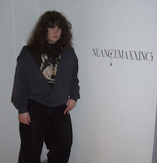

ATC is currently run by DAAP students in the school of fine art.
Haley Zuch is a multimedia artist who enjoys researching niche aspects of the internet. She enjoys implementing technology into her process while primarily operating as an oil painter. She has been painting portraits of women since she first started drawing. However has developed her specific style and technique while pursuing her BFA at the University of Cincinnati. Her recent series is investigating what it means to be an “e-girl” or a girl online. She draws on both her personal experience and the wider perception of these girls. She has always been interested in exploring how women operate on the internet. Haley has been a part of multiple local group exhibitions and is eager to be a part of more.

Valerie merges traditional craft with technological process. Juxtaposing industrial fabrication methods with handmade making to produce objects that embody the process of becoming. Caught between the digital and the physical, her work carries evidence of both origins: the elegance of a CAD file, the logic of a G-Code Path, and the unmistakable trace of material still in the act of becoming.
Valeria makes cool ass work about neotribalism and institutional critique.